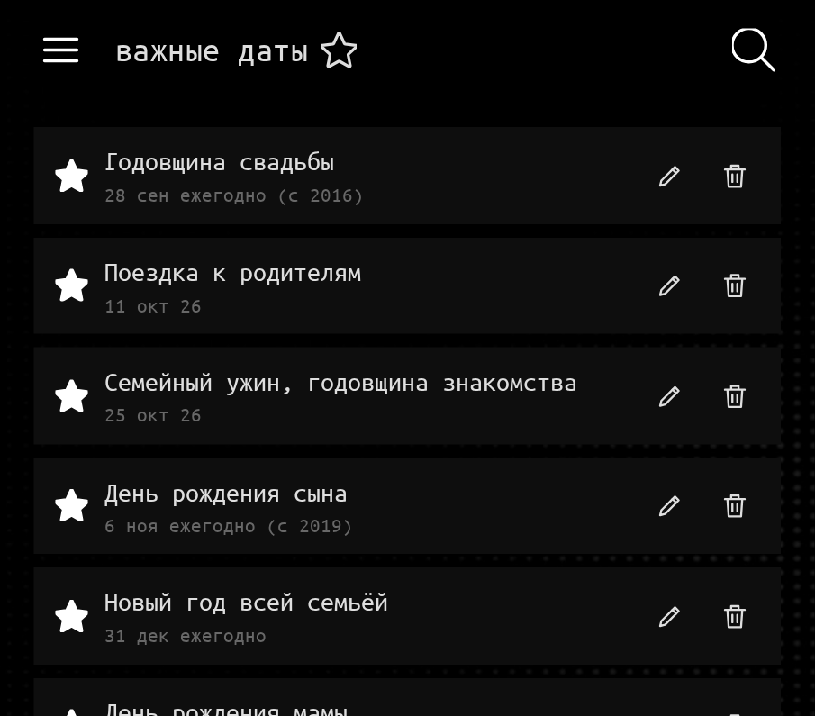
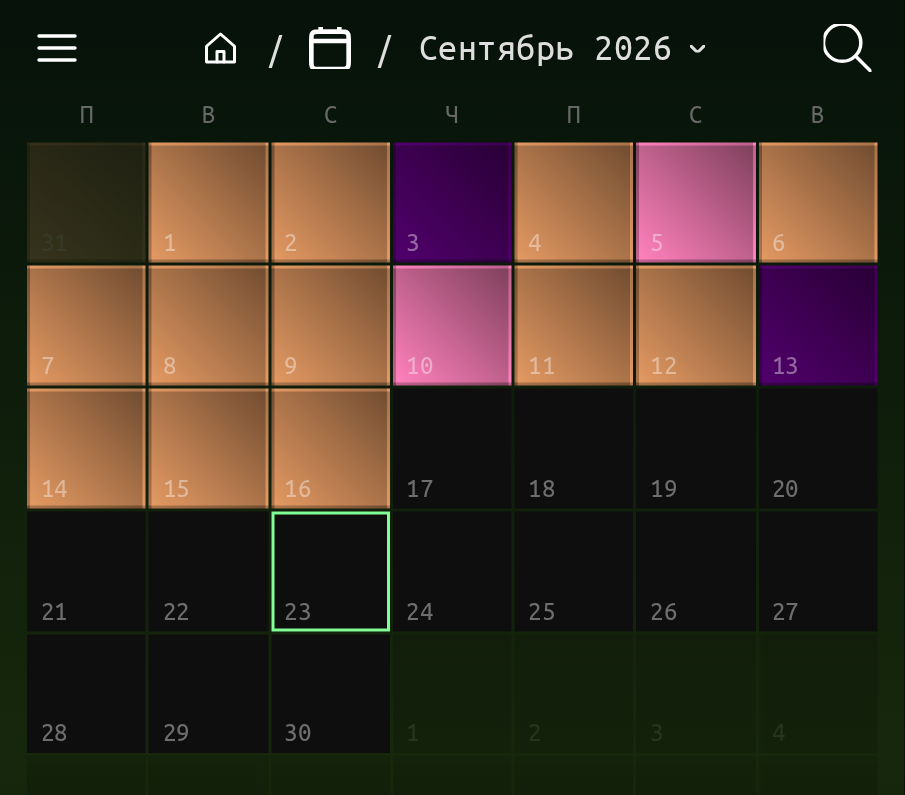
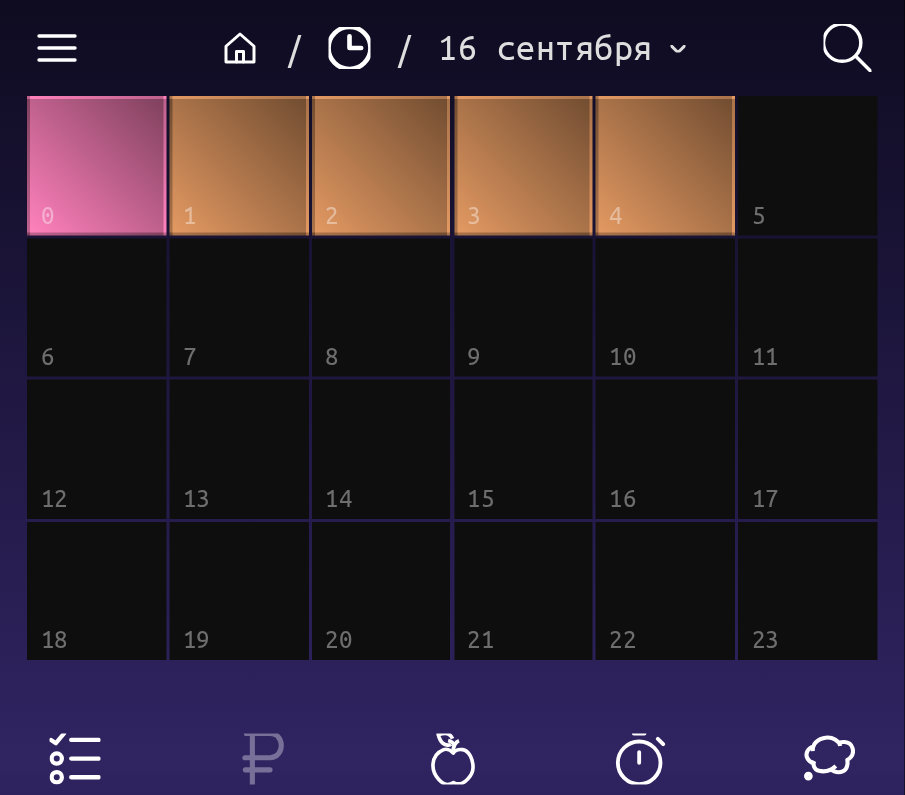
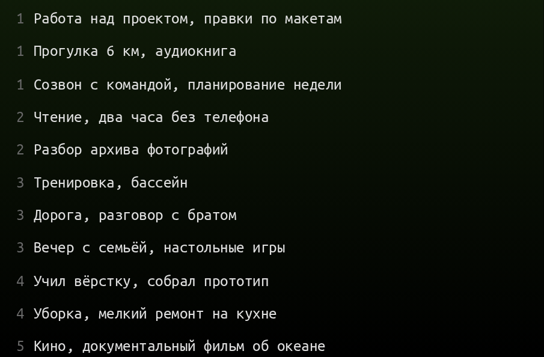

Семья
Вечера с близкими, дни рождения, годовщины, поездки к родителям. Про то, что нет ничего важнее семьи, любят говорить в кино. Хронум не даст забыть важные семейные даты и события.
дневник времени
Отмечайте, чем занят час: работа, тренировка, сон, еда, дорога, вечер с семьёй. Из клеток складывается картина дня, месяца и года — и сразу понятно, где время работает на вас, а где просто утекает.
0 с Секунду ценит тот, кто успел затормозить. Здесь секунда — это один тап, которым отмечен прошедший час.
год как на ладони
Год кажется большим, пока не разложен. В сетке ниже — один прожитый год с обычной жизнью: работа, сон, дорога, быт. И всё же в нём нашлось место почти всему, что человек себе планировал.
Разобраться с прокрастинацией можно за месяц. Заговорить на другом языке — за год. Спортивное тело — это три-пять лет регулярных тренировок. Воспитание ребёнка — может занять всю жизнь. Разница между «когда-нибудь» и «сделано» — в количестве минут, часов и дней, которые вы на это отвели. А какие дела вы бы не хотели упустить?
ваш реальный бюджет
Сон, работа, дорога и быт забирают большую часть суток — это нормально. Важно другое: остаётся около трёх часов, и именно они решают, появится ли форма, язык, проект или спокойный вечер с близкими.
Три часа в день — это 21 час в неделю и 90 часов в месяц. Достаточно, чтобы привести себя в форму или довести до конца то, что откладывалось годами. Но только если вы видите, куда эти часы уходят.
что попадает в учёт
Управлять можно тем, что видно. Хронум ничего не решает за вас — он делает вашу жизнь читаемой, а дальше решения появляются сами.

Вечера с близкими, дни рождения, годовщины, поездки к родителям. Про то, что нет ничего важнее семьи, любят говорить в кино. Хронум не даст забыть важные семейные даты и события.

Проекты, дела и сроки живут там же, где часы. Видно не только «я много работал», а сколько именно часов ушло в задачу, которая действительно двигала дело вперёд.

Список задач, привязанный к дню, а не к настроению. Невыполненное не теряется, а остаётся видимым: сразу понятно, что откладывается третью неделю.

Короткие записи по ходу дня: идея, вывод, разговор. Через год это уже не заметки, а история вашего мышления.
Приёмы пищи и калории пишутся в тот же день, что и остальное. Через неделю вместо «много ем» появляется конкретная картина срывов.
Занятия, километры, подходы. Месяц показывает не намерения, а факт: сколько тренировок было и не затянулся ли пропуск.
Когда легли, когда встали, сколько спали. Режим налаживается не обещаниями, а видимой строкой, которую неприятно портить.
Визиты, анализы, курсы лекарств, напоминания «пора повторить». То, что обычно вспоминается слишком поздно, хранится рядом с обычными днями.
как это работает
Один тап: чем были заняты. Пять секунд, без форм и отчётов.
День, месяц, год собираются сами. Ничего считать вручную не нужно.
Когда видно, где уходит время, менять его становится делом техники, а не силы воли.
Что нужно, чтобы успевать то, что действительно важно? Не терять дни в тумане «вроде был занят», помнить о близких не по случаю, доводить начатое до конца, а не до следующего года. Универсального ответа нет — его не даст вам ни книга про высокоэффективные навыки, ни курс по тайм-менеджменту. Но у ответа есть одно условие: нужно видеть, куда уходит ваше время. Попробуйте Хронум — и ответ станет заметно ближе.
Регистрация занимает минуту. О тарифах сообщим заранее, без сюрпризов.
Никаких баннеров, промо и «партнёрских предложений». Мы старались сделать так, чтобы приложение решало только вашу задачу, а не маркетинговые цели других.
Хронум не передаёт даже обезличенные данные сторонним сервисам: ни аналитике, ни рекламным сетям, ни «партнёрам по улучшению продукта». Записи изолированы на уровне базы и доступны только вашему аккаунту.
Хронум возможно развернуть на сервере организации: данные сотрудников остаются внутри, наружу не уходит ничего. Понятный учёт времени — это рост эффективности и человеческого капитала без слежки и микроменеджмента. Также мы готовы доработать сервис под ваши индивидуальные метрики. Расскажите о задаче — обсудим.
расскажите о задаче